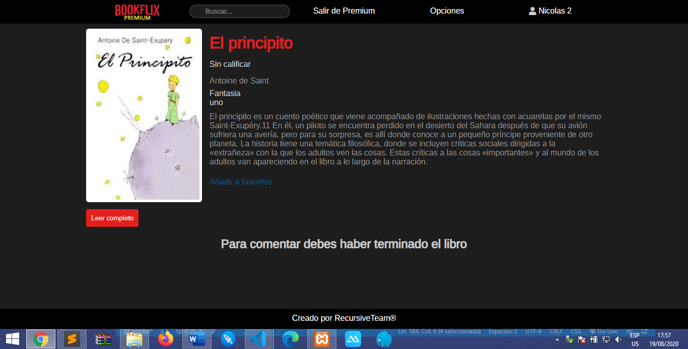

Aplicación web agenda de contactos donde podés agregar un nuevo contacto, editarlo y darlo de baja. Realizada con PHP, MySql, Javascript, Ajax, Html y Css.
Página para reviews de películas hecha para la materia seminario de lenguajes UNLP, podes acceder sin registrarte (aunque no podrás dejar tu reseña). Realizada con PHP, MySql, Javascript, Ajax, Html y Css.

Plataforma para lectura de libros realizada con dos compañeros de la facultad para la materia ingeniería de software II. Cuenta tanto con la parte de administrador como la de suscriptor. Usamos las siguientes tecnologias: PHP, Javascript, JQuery, MySql, Html, Css y Git.